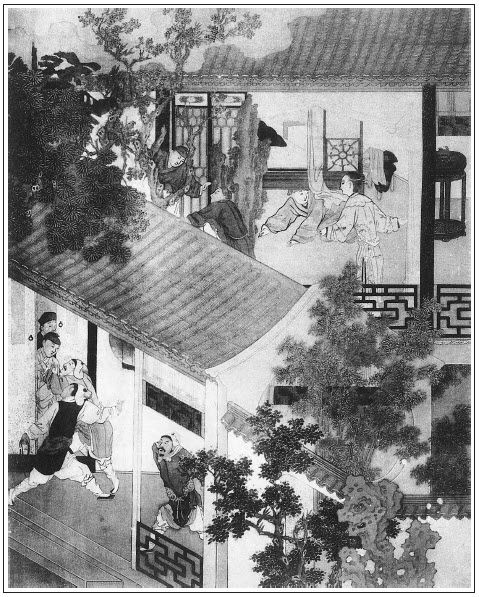

張回此回特與金蓮出身處說報應，則西門之因果不問可知矣。
夫李桂兒，西門之表子也。乃王三官私之，其氣固不必言。今忽得一人指引，即無林氏，已有差人拿訪之勢，況乎林氏囑之，為一舉而兩得乎？此西門一生快意事也。夫快意至此，其為願已足，宜乎死期迫之矣。末找伯爵，又為十弟兄一描。
林太太之敗壞家風，乃一入門一對聯寫出之，真是一針見血之筆。
月兒寵而李桂姐疏，又遙與瓶兒、金蓮相映。
林氏以告引誘三官之人為由，以通西門，然則三官賣了母，林氏又賣了子也。西門之假子，自應此等人做。
西門通林氏，使不先壓倒王三官，則必不能再調，且必不能林氏請過去，西門請過來。今看他止借林氏借話，便一過入王三官求情，則三官不折自倒，而一任林氏與西門停眠整宿矣。齊家必先修身，信然！
末寫與桂姐疏談，卻是月兒告西門慶引入林氏之本意，西門在其居中矣。
詞曰：
香煙裊，羅幃錦帳風光好。風光好，金釵斜嚲，鳳顛鸞倒。
恍疑身在蓬萊島，邂逅相逢緣不小。緣不小，最開懷處，蛾眉淡掃。
──右調《憶秦娥》

話說玳安同文嫂兒到家，平安說：「爹在對門房子裡。」進去稟報。西門慶正在書房中和溫秀才坐的，見玳安，隨即出來，小客位內坐下。玳安道：「文嫂兒叫了來，在外邊伺候。」西門慶即令：「叫他進來。」那文嫂悄悄掀開暖簾，進入裡面，向西門慶磕頭。西門慶道：「文嫂，許久不見你。」文嫂道：「小媳婦有。」西門慶道：「你如今搬在那裡住了？」文嫂道：「小媳婦因不幸為了場官司，把舊時那房兒棄了，如今搬在大南首王家巷住哩。」西門慶吩咐道：「起來說話。」那文嫂一面站立在旁邊。西門慶令左右都出去，那平安和畫童都躲在角門外伺候，只玳安兒影在簾兒外邊聽。張夾又大書蝶使。西門慶因問：「你常在那幾家大人家走跳？」文嫂道：「就是大街皇親家，守備府周爺家，喬皇親、張二老爹、夏老爹家，都相熟。」張夾說出許多，卻不是這一家。西門慶道：「你認的王招宣府裡不認的？」文嫂道：「是小媳婦定門主顧，太太和三娘常照顧我的花翠。」張夾便連三娘說出。西門慶道：「你既相熟，我有樁事兒央及你，休要阻了我。」向袖中取出五兩一錠銀子與他，悄悄和他說：「如此這般，你怎的尋個路兒把他太太吊在你那裡，張夾太太下從未連吊在那裡四字，太太不堪。我會他會兒，我還謝你。」那文嫂聽了，哈哈笑道：「是誰對爹說來？你老人家怎的曉得來？」西門慶道：「常言：人的名兒，樹的影兒。我怎得不知道！」文嫂道：「若說起我這太太來，今年屬豬，三十五歲，端的上等婦人，百伶百俐，只好像三十歲的。繡眉此等事是伶俐人會做。他雖是幹這營生，張夾太太有營生，奇矣。營生，又有這營生，又奇。好不幹的細密！就是往那裡去，許多伴當跟隨，逕路兒來，逕路兒去。三老爹在外為人做人，張夾為人做人，人如此可歎。魯莊公惡得無罪哉！他怎在人家落腳？──這個人傳的訛了。倒是他家裡深宅大院，一時三老爹不在，藏掖個兒去，人不知鬼不覺，倒還許。若是小媳婦那裡，窄門窄戶，敢招惹這個事？就是爹賞的這銀子，小媳婦也不敢領去。寧可領了爹言語，對太太說就是了。」西門慶道：「你不收，便是推托，我就惱了。事成，我還另外賞幾個綢緞你穿。」文嫂道：「愁你老人家沒有也怎的？上人著眼覷，就是福星臨。」磕了個頭，把銀子接了，說道：「待小媳婦悄悄對太太說，來回你老人家。」西門慶道：「你當件事幹，張夾妙。我這裡等著。你來時，只在這裡來就是了，我不使小廝去了。」文嫂道：「我知道。不在明日，只在後日，隨早隨晚，討了示下就來了。」一面走出來。玳安道：「文嫂，隨你罷了，我只要你一兩銀子，也是我叫你一場。你休要獨吃。」文嫂道：「猢猻兒隔牆掠篩箕，還不知仰著合著哩。」張夾一繳妙使。於是出門騎上驢子，他兒子籠著，一直去了。西門慶和溫秀才坐了一回，良久，夏提刑來，就冠冕著同往府裡羅同知──名喚羅萬象那裡吃酒去了。直到掌燈以後才來家。
且說文嫂兒拿著西門慶五兩銀子，到家歡喜無盡，打發會茶人散了。張夾細。至後晌時分，走到王招宣府宅裡，見了林太太，道了萬福。林氏便道：「你怎的這兩日不來看看我？」文嫂便把家中會茶，趕臘月要往頂上進香一節告訴林氏。張夾即以此入，利口可畏。林氏道：「你兒子去，你不去罷了。」文嫂兒道：「我如何得去？只教文す代進香去罷了。」林氏道：「等臨期，我送些盤纏與你。」文嫂便道：「多謝太太佈施。」說畢，林氏叫他近前烤火，張旁情景逼真。丫鬟拿茶來吃了。這文嫂一面吃了茶，問道：「三爹不在家了？」林氏道：「他又有兩夜沒回家，只在裡邊歇哩。逐日搭著這伙喬人，只眠花臥柳，把花枝般媳婦兒丟在房裡，通不顧，如何是好？」文嫂又問：「三娘怎的不見？」林氏道：「他還在房裡未出來哩。」這文嫂見無人，便說道：「不打緊，太太寬心。小媳婦有個門路兒，管就打散了這夥人，三爹收心，也再不進院去了。張夾漸漸說入矣。太太容小媳婦，便敢說；不容便不敢說。」繡眉進言之巧，立說之妙，一毫不露本意，而寬詠之地，是以隋何。林氏道：「你說的話兒，那遭兒我不依你來？張夾補出不堪。你有話只顧說不妨。」這文嫂方說道：「縣門前西門大老爹，如今見在提刑院做掌刑千戶，家中放官吏債，開四五處鋪面：緞子鋪、生藥鋪、綢絹鋪、絨線鋪，外邊江湖又走標船，揚州興販鹽引，東平府上納香蠟，夥計主管約有數十。東京蔡太師是他干爺，朱太尉是他衛主，翟管家是他親家，巡撫巡按都與他相交，知府知縣是不消說。家中田連阡陌，米爛成倉，繡眉向富貴家亦必先及勢利。甚矣，勢利之不可已也。張夾此處將西門財勢一總。身邊除了大娘子──乃是清河左衛吳千戶之女，填房與他為繼室──只成房頭、穿袍兒的，也有五六個。以下歌兒舞女，得寵侍妾，不下數十。端的朝朝寒食，夜夜元宵。今老爹不上三十一二年紀，正是當年漢子，大身材，一表人物。也曾吃藥養龜，慣調風情；繡眉頓及此物，意想不到。張夾又將色字一總。雙陸象棋，無所不通；蹴踘打毬，無所不曉；諸子百家，拆白道字，眼見就會。端的擊玉敲金，百伶百俐。聞知咱家乃世代簪纓人家，根基非淺，張夾罵盡。又見三爹在武學肄業，也要來相交，只是不曾會過，不好來的。昨日聞知太太貴誕在邇，又四海納賢，繡眉《書》云：「四海困窮」。「四海」二字絕妙。歇後語。張夾蘊藉。也一心要來與太太拜壽。小媳婦便道：『初會，怎好驟然請見的。待小的達知老太太，討個示下，來請老爹相見。』今老太太不但結識他來往相交，只央浼他把這干人斷開了，須玷辱不了咱家門戶。」張夾反說，妙甚。林氏被文嫂這篇話說的心中迷留摸亂，情竇已開，便向文嫂兒較計道：張夾計較，妙。「人生面不熟，怎好遽然相見？」文嫂道：「不打緊，等我對老爹說。只說太太先央浼他要到提刑院遞狀，告引誘三爹這起人，預先請老爹來私下先會一會，此計有何不可？」說得林氏心中大喜，約定後日晚夕等候。
這文嫂討了婦人示下歸家，到次日飯時，走來西門慶宅內。西門慶正在對門書院內坐的，忽玳安報：「文嫂來了。」西門慶聽了，即出小客位，令左右放下簾兒。張旁簾子一絲不錯。良久，文嫂進入裡面，磕了頭，玳安知局，就走出來了。張夾走的又妙，活是蝶使。文嫂便把怎的說念林氏：「誇獎老爹人品家道，怎樣結識官府，又怎的仗義疏財，風流博浪，說得他千肯萬肯，約定明日晚間，三爹不在家，家中設席等候。假以說人情為由，暗中相會。」西門慶聽了，滿心歡喜。又令玳安拿了兩疋綢緞賞他。文嫂道，「爹明日要去，休要早了。直到掌燈，街上人靜時，打他後門首扁食巷中繡眉「後門首，扁食巷」，好美名。張夾一笑，後門一。──他後門旁張夾後門二。有個住房的段媽媽，張夾斷林入路之處，故用段媽媽也。我在他家等著。爹只使大官兒彈門，我就出來引爹入港，休令左近人知道。」西門慶道：「我知道。你明日先去，不可離寸地，我也依期而至。」說畢，文嫂拜辭出門，又回林氏話去了。張夾寫出蜂媒。
西門慶那日，歸李嬌兒房中宿歇，一宿無話。巴不到次日，培養著精神。繡眉若在金蓮房中，怎得精神培養。午間，戴著白忠靖巾，便同應伯爵騎馬往謝希大家吃生日酒。席上兩個唱的。西門慶吃了幾杯酒，約掌燈上來，就逃席走出來了。騎上馬，玳安、琴童兩個小廝跟隨。那時約十九日，月色朦朧，張夾有月兒在，然則月兒蓋十九日之月，上遲而落速也。帶著眼紗由大街抹過，逕穿到扁食巷王招宣府後門來。那時才上燈一回，街上人初靜之後。西門慶離他後門半捨，把馬勒住，張夾後門三。令玳安先彈段媽媽家門。原來這媽媽就住著王招宣家後房，也是文嫂舉薦，早晚看守後門，張夾後門四。開門閉戶。但有入港，在他家落腳做窩。文嫂在他屋裡聽見彈門，張夾彈門。連忙開門。張夾開門。見西門慶來了，一面在後門裡張夾後門五。等的西門慶下了馬，除去眼紗兒，引進來，吩咐琴童牽了馬，往對門人家張夾又插對門。西首房簷下那裡等候，玳安便在段媽媽屋裡存身。張夾細，一路寫得隱僻之至。這文嫂一面請西門慶入來，便把後門關了，張夾後門六。上了栓，由夾道進內。張夾夾道。轉過一層群房，張夾群房。就是太太住的五間正房，旁邊一座便門閉著。張夾便門卻是三官娘子住者。這文嫂輕敲敲門環兒，原來有個聽頭。少頃，見一丫鬟出來，開了雙扉。文嫂導引西門慶到後堂，掀開簾攏，只見裡面燈燭熒煌，正面供養著他祖爺太原節度頒陽郡王，王景崇的影身圖：張夾可憐。穿著大紅團袖，蟒衣玉帶，虎皮交椅坐著觀看兵書。有若關王之像，繡眉可畏哉！只是髯鬚短些。張夾可憐。一筆。迎門朱紅匾上寫著「節義堂」三字，張夾二筆。兩壁隸書一聯：「傳家節操同松竹，繡旁未必。張夾祖宗之心如此。可憐，可歎。報國勳功並斗山。」張夾三筆。用三大筆突兀寫來，令人不堪回首舊功勳。西門慶正觀看之間，只聽得門簾上鈴兒響，張夾細極，是市井暴發人初至勳銘家者景像。文嫂從裡拿出一盞茶來與西門慶吃。西門慶便道：「請老太太出來拜見。」文嫂道：「請老爹且吃過茶著，剛才稟過太太知道了。」不想林氏悄悄從房門簾裡望外邊觀看，張夾先看。見西門慶身材凜凜，一表人物，頭戴白緞忠靖冠，張夾又映瓶兒。貂鼠暖耳，身穿紫羊絨鶴氅，腳下粉底皂靴，就是個──
富而多詐奸邪輩，壓善欺良酒色徒。
林氏一見滿心歡喜，因悄悄叫過文嫂來，問他戴的孝是誰的。文嫂道：「是他第六個娘子的孝，新近九月間沒了不多些時。饒少殺，家中如今還有一巴掌人兒。他老人家，你看不出來？『出籠兒的鵪鶉──也是個快斗的』。」繡眉善喻。這婆娘聽了，越發歡喜無盡。文嫂催逼他出去，張夾出去。婦人道：「我羞答答怎好出去？請他進來見罷。」繡眉進來豈遂不羞？可笑。張夾進來。文嫂一面走出來，向西門慶說：「太太請老爹房內拜見哩。」於是忙掀門簾，西門慶進入房中，但見簾幙垂紅，氈毹鋪地，麝蘭香靄，氣暖如春。繡榻則斗帳雲橫，錦屏則軒轅月映。張夾寫盡房中，不是西門家市井氣。婦人頭上戴著金絲翠葉冠兒，身穿白綾寬綢襖兒，沉香色遍地金妝花緞子鶴氅，大紅宮錦寬襴裙子，老鸛白綾高底鞋兒。就是個綺閣中好色的嬌娘，深閨內施𣭈的菩薩。有詩為證：
雲濃脂膩黛痕長，蓮步輕移蘭麝香。
醉後情深歸繡帳，始知太太不尋常。繡旁深思哉！
西門慶一見便躬身施禮，說道：「請太太轉上，學生拜見。」林氏道：「大人免禮罷。」西門慶不肯，就側身磕下頭去拜兩拜。婦人亦敘禮相還。拜畢，西門慶正面椅子上坐了，林氏就在下邊梳背炕沿斜僉相陪。文嫂又早把前邊儀門閉上了，張夾儀門閉上。再無一個僕人在後邊。三公子那邊角門也關了。張夾角門關了，一路寫門緊嚴之甚。一個小丫鬟名喚芙蓉，拿茶上來，林氏陪西門慶吃了茶，文嫂就在旁說道：「太太久聞老爹執掌刑名，敢使小媳婦請老爹來央煩樁事兒，未知老爹可依允不依？」繡眉兩下未同而言，真難啟齒，文嫂就中點撥，的的能人。張夾開場未有央人情，請來內室央者。西門慶道：「不知老太太有甚事吩咐？」林氏道：張夾卻用林氏接說。「不瞞大人說，寒家雖世代做了這招宣，不幸夫主去世年久，家中無甚積蓄。小兒年幼優養，未曾考襲，如今雖入武學肄業，年幼失學。外邊有幾個奸詐不良的人，日逐引誘他在外飄酒，把家事都失了。幾次欲待要往公門訴狀，誠恐拋頭露面，有失先夫名節。繡眉名節在此而不在彼，此輩藉口往往而然，真欲嘔死。張夾自說妙。今日敢請大人至寒家訴其衷曲，就如同遞狀一般。望乞大人千萬留情把這干人怎生處斷開了，使小兒改過自新，專習功名，以承先業，實出大人再造之恩，妾身感激不淺，自當重謝。」西門慶道：「老太太怎生這般說。尊家乃世代簪纓，先朝將相。令郎既入武學，正當努力功名，承其祖武，不意聽信游食所哄，留連花酒，實出少年所為。太太既吩咐，學生到衙門裡，即時把這干人處分懲治，庶可杜絕將來。」這婦人聽了，連忙起身，向西門慶道了萬福，說道：「容日妾身致謝大人。」西門慶道：「你我一家，何出此言。」張夾一句合攏。說話之間，彼此眉目顧盼留情。
不一時，文嫂放桌兒擺上酒來，西門慶故意辭道：繡旁亦可不必。「學生初來進謁，倒不曾送禮來，如何反承老太太盛情留坐！」林氏道：「不知大人下降，沒作整備。寒天聊具一杯水酒，表意而已。」丫鬟篩上酒來，端的金壺斟美釀，玉盞貯佳餚。林氏起身捧酒，西門慶亦下席道：「我當先奉老太太一杯。」文嫂兒在旁插口說道：「老爹且不消遞太太酒。這十一月十五日是太太生日，那日送禮來與太太祝壽就是了。」張夾便引入再調。西門慶道：「阿呀！早時你說。今日是初九，差六日。我在下一定來與太太登堂拜壽。」林氏笑道：「豈敢動勞大人！」須臾，大盤大碗，就是十六碗美味佳餚，旁邊絳燭高燒，下邊金爐添火，交杯一盞，行令猜枚，笑雨嘲雲。酒為色膽。看看飲至蓮漏已沉、窗月倒影之際，張夾又映月兒。一雙竹葉穿心，兩個芳情已動。文嫂已過一邊，連次呼酒不至。西門慶見左右無人，漸漸促席而坐，言頗涉邪，把手捏腕之際，挨肩擦膀之間。初時戲摟粉項，婦人則笑而不言；次後款啟朱唇，張夾反是婦人啟唇。西門慶則舌吐其口，鳴咂有聲，笑語密切。繡眉如何不害一些羞？婦人於是自掩房門，解衣松佩，微開錦帳，輕展繡衾，鴛枕橫床，鳳香薰被，相挨玉體，抱摟酥胸。張夾一路用錦鄉語，是睹招宣家也。原來西門慶知婦人好風月，家中帶了淫器包在身邊，又服了胡僧藥。婦人摸見他陽物甚大，張夾這反是婦人先摸。西門慶亦摸其牝戶，彼此歡欣，情興如火。展猿臂，不覺蝶浪蜂狂；蹺玉腿，那個羞雲怯雨！正是：
縱橫慣使風流陣，那管床頭墮玉釵。
西門慶當下竭平生本事，將婦人盡力盤桓了一場。張夾造孽者只圖「盡力」二字。纏至更深天氣，方才精洩。婦人則髮亂釵橫，花憔柳困。張夾四字不堪。兩個並頭交股，摟抱片時，起來穿衣。婦人款剔銀燈，開了房門，照鏡整容，呼丫鬟捧水淨手。復飲香醪，再勸美酌。三杯之後，西門慶告辭起身，婦人挽留不已，叮嚀頻囑。西門慶躬身領諾，謝擾不盡，相別出門。婦人送到角門首回去了。張夾繳角門。文嫂先開後門，張夾繳後門。呼喚玳安、琴童牽馬過來，騎上回家。街上已喝號提鈴，更深夜靜，但見一天霜氣，萬籟無聲。西門慶回家，一宿無話。
到次日，西門慶到衙門中發放已畢，在後廳叫過該地方節級緝捕，吩咐如此這般：「王招宣府裡三公子，看有甚麼人勾引他，院中在何人家行走，即查訪出名字來，報我知道。」因向夏提刑說：「王三公子甚不學好，昨日他母親再三央人來對我說，倒不關他兒子事，只被這干光棍勾引他。今若不痛加懲治，將來引誘壞了人家子弟。」夏提刑道：「長官所見不錯，張夾木偶如畫。必該治他。」節級緝捕領了西門慶鈞語，當日即查訪出各人名姓來，打了事件，到後晌時分來西門慶宅內呈遞揭帖。西門慶見上面有孫寡嘴、祝實念、小張閒、聶鉞兒、向三、於寬、白回子，樂婦是李桂姐、秦玉芝兒。西門慶取過筆來，把李桂姐、秦玉芝兒並老孫、祝實念名字都抹了，吩咐：「這小張閒等五個光棍，即與我拿了，明日早帶到衙門裡來。」眾公人應諾下去。至晚，打聽王三官眾人都在李桂姐家吃酒、踢行頭，張夾可知上回一喝之妙。都埋伏在房門首。深更時分，剛散出來，眾公人把小張閒、聶鉞、於寬、白回子、向三五人都拿了。孫寡嘴與祝實念扒李桂姐後房去了，王三官藏在李桂姐床底下，不敢出來。張夾又是丁二官舊套。桂姐一家諕的捏兩把汗，更不知是那裡的人，亂央人打聽實信。王三官躲了一夜不敢出來。李家鴇子又恐怕東京下來拿人，到五更時分，攛掇李銘換了衣服，送王三官來家。
節級緝捕把小張閒等拿在聽事房吊了一夜。到次日早晨，西門慶進衙門與夏提刑升廳，兩邊刑杖羅列，帶人上去。每人一夾二十大棍，打得皮開肉綻，鮮血迸流，響聲震天，哀號慟地。西門慶囑咐道：「我把你這起光棍，專一引誘人家子弟在院飄風，不守本分，本當重處，今姑從輕責你這幾下兒。再若犯在我手裡，定然枷號，在院門首示眾！」喝令左右：「扠下去！」眾人望外，金命水命，走投無命。
兩位官府發放事畢，退廳喫茶。夏提刑因說起：「昨日京中捨親崔中書那裡書來，說衙門中考察本上去了，還未下來哩。張夾夏龍溪一邊事，又在隱約之間。今日會了長官，咱倒好差人往懷慶府同僚林蒼峰那裡，張夾特與杏庵一對，又為林氏老景一描。打聽打聽消息去。他那裡臨京近。」西門慶道：「長官所見甚明。」即喚走差的上來吩咐：「與你五錢銀子盤纏，即拿俺兩個拜帖，到懷慶府提刑林千戶老爹那裡，打聽京中考察本示下，看經歷司行下照會來不曾。務要打聽的實，來回報。」那人領了銀子、拜帖，又到司房結束行裝，討了疋馬，長行去了。兩位官府才起身回家。
卻說小張閒等從提刑院打出來，走在路上各人思想，更不料今日受這場虧是那裡藥線，互相埋怨。小張閒道：「莫不還是東京那裡的消息？」白回子道：「不是。若是那裡消息，怎肯輕饒素放？」常言說得好：乖不過唱的，賊不過銀匠，能不過架兒。繡眉一路敘致疏落，有要沒緊，情事又逼真。聶鉞兒一口就說道：「你每都不知道，只我猜得著。此一定是西門官府和三官兒上氣，嗔請他表子，故拿俺每煞氣。正是：龍斗虎傷，苦了小獐。」小張閒道：「列位倒罷了，只是苦了我在下了。孫寡嘴、祝麻子都跟著，只把俺每頂缸。」於寬道：「你怎的說渾話？他兩個是他的朋友，若拿來跪在地下，他在上面坐著，怎生相處？」小張閒道：「怎的不拿老婆？」聶鉞道：「兩個老婆，都是他心上人。李家桂姐是他的表子，他肯拿來！也休怪人，是俺每的晦氣，偏撞在這網裡。才夏老爹怎生不言語，只是他說話？這個就見出情弊來了。如今往李桂姐家尋王三官去！白為他打了這一屁股瘡來不成？便罷了，就問他要幾兩銀子盤纏，也不吃家中老婆笑話。」於是逕入勾欄，見李桂姐家門關的鐵桶相似。張夾如畫。叫了半日，丫頭隔門問是誰，小張閒道：「是俺每，尋三官兒說話。」丫頭回說：張夾如畫。「他從那日半夜就回家去了，不在這裡。無人在家中，不敢開門。」這眾人只得回來，到王招宣府內，逕入他客位裡坐下。王三官聽見眾人來尋他，諕得躲在房裡不敢出來。半日，使出小廝永定兒來說：「俺爹不在家了。」眾人道：「好自在性兒！不在家了，往那裡去了？叫不將來！」於寬道：「實和你說了罷，休推睡裡夢裡。剛才提刑院打了俺每，押將出來。如今還要他正身見官去哩！」摟起腿來與永定瞧，教他進裡面去說：「為你打俺每，有甚要緊！」一個個都躺在凳上聲疼叫喊。張夾如畫。
那王三官兒越發不敢出來，只叫：「娘，怎麼樣兒？如何救我則可。」林氏道：「我女婦人家，如何尋人情去救得？」求了半日，見外邊眾人等得急了，要請老太太說話。那林氏又不出去，只隔著屏風說道：「你每略等他等，委的在莊上，不在家了。我這裡使小廝叫他去。」小張閒道：「老太太，快使人請他來！這個癤子終要出膿，只顧膿著不是事。繡眉因禍患為取利之媒，此輩深得塞翁之意。俺每為他連累打了這一頓。剛才老爹吩咐押出俺每來要他。他若不出來，大家都不得清淨，就弄的不好了。」林氏聽言，連忙使小廝拿出茶來與眾人吃。王三官諕的鬼也似，逼他娘尋人情。繡眉不若令堂更為切貼。張夾可笑。直到至急之處，林氏方才說道：「文嫂他只認的提刑西門官府家，昔年曾與他女兒說媒來，在他宅中走的熟。」王三官道：「就認的西門提刑也罷。快使小廝請他來。」林氏道：「他自從你前番說了他，使性兒一向不來走動，怎好又請他？他也不肯來。」張夾淫婦可恨。王三官道：「好娘，如今事在至急，請他來，等我與他陪個禮兒便了。」繡眉請問三官：因何說他？人屬不解。林氏便使永定兒悄悄打後門出去，請了文嫂來。王三官再三央及他，一口一聲只叫：繡旁有景。「文媽，你認的提刑西門大官府，好歹說個人情救我。」這文嫂故意做出許多喬張致來，說道：「舊時雖故與他宅內大姑娘說媒，這幾年誰往他門上走！大人家深宅大院，不去纏他。」王三官連忙跪下，繡旁妙，有景。說道：「文媽，你救我，恩有重報，不敢有忘。那幾個人在前邊只要出官，我怎去得？」文嫂只把眼看他娘，張夾如畫。他娘道：「也罷，你便替他說說罷了。」文嫂道：「我獨自個去不得。三叔，你衣巾著，等我領你親自到西門老爹宅上，你自拜見央浼他，等我在旁再說，管情一天事就了了。」王三官道：「見今他眾人在前邊催逼甚急，只怕一時被他看見怎了？」文嫂道：「有甚難處勾當？等我出去安撫他，再安排些酒肉點心茶水哄他吃著，我悄悄領你從後門出去，幹事回來，張夾後門又出，西門從此入三官家，三官亦此至西門家。奇絕。他就便也不知道。」
這文嫂一面走出前廳，向眾人拜了兩拜，說道：「太太教我出來，多上覆列位哥每：本等三叔往莊上去了，不在家，使人請去了，便來也。你每略坐坐兒。吃打受罵，連累了列位。誰人不吃鹽米，等三叔來，教他知遇你們。你們千差萬差來人不差，恆屬大家只要圖了事。上司差派，不由自己。有了三叔出來，一天大事都了了。」眾人聽了，一齊道：「還是文媽見的多，你老人家早出來說恁句有南北的話兒，俺每也不急的要不的。執殺法兒只回不在家，莫不俺每自做出來的事？你恁帶累俺每吃官棒，上司要你，假推不在家。吃酒吃肉，教人替你不成？張夾卿等正為替吃酒肉惹出禍來。文媽，你是曉道理的，你出來，俺每還透個路兒與你──破些東西兒，尋個分上兒說說，大家了事。你不出來見俺每，這事情也要消繳，一個緝捕問刑衙門，平不答的就罷了？」文嫂兒道：「哥每說的是。你每略坐坐兒，我對太太說，安排些酒飯兒管待你每。你每來了這半日也餓了。」眾人都道：「還是我的文媽知人苦辣。不瞞文媽說，俺每從衙門裡打出來，黃湯兒也沒曾嘗著哩！」這文嫂走到後邊，一力竄掇，打了二錢銀子酒，買了一錢銀子點心，豬羊牛肉各切幾大盤，拿將出去，一壁哄他眾人在前邊大酒大肉吃著。
這王三官儒巾青衣，寫了揭帖，文嫂領著，帶上眼紗，悄悄從後門出來，張夾後門二。步行徑往西門慶家來。到了大門首，平安兒認的文嫂，說道：「爹才在廳上，進去了。文媽有甚話說？」文嫂遞與他拜帖，說道：「哥哥，累你替他稟稟去。」連忙問王三官要了二錢銀子遞與他，那平安兒方進去替他稟知西門慶。西門慶見了手本拜帖，上寫著：「眷晚生王采頓首百拜。」一面先叫進文嫂，問了回話，然後才開大廳隔子門，張夾畫。使小廝請王三官進去。西門慶頭戴忠靖巾，便衣出來迎接，見王三衣巾進來，故意說道：「文嫂怎不早說？我褻衣在此。」便令左右：「取我衣服來。」張夾寫出矜人之態。慌的王三官向前攔住道：「尊伯尊便，小侄敢來拜瀆，豈敢動勞！」至廳內，王三官務請西門慶轉上行禮。西門慶笑道：「此是舍下。」再三不肯。西門慶居先拜下去，王三官說道：「小侄有罪在身，繡眉當雲小兒，豈止小侄。久仰，欠拜。」西門慶道：「彼此少禮。」王三官因請西門慶受禮，說道：「小侄人家，老伯當得受禮，以恕拜遲之罪。」務讓起來，受了兩禮。西門慶讓坐，王三官又讓了一回，然後挪座兒斜僉坐的。
少頃，吃了茶，王三官向西門慶說道：「小侄有事，不敢奉瀆尊嚴。」因向袖中取出揭帖遞上，隨即離座跪下。被西門慶一手拉住，說道：「賢契繡旁美稱。有甚話，但說何害！」王三官就說：「小侄不才，誠為得罪，望乞老伯念先父武弁一殿之臣，寬恕小侄無知之罪，完其廉恥，免令出官，則小侄垂死之日，實再生之幸也。銜結圖報，惶恐，惶恐！」西門慶展開揭帖，上面有小張閒等五人名字，說道：「這起光棍，我今日衙門裡，已各重責發落，饒恕了他，怎的又央你去？」王三官道：「他說老伯衙門中責罰了他，押出他來，還要小侄見官。在家百般辱罵喧嚷，索詐銀兩，不得安生，無處控訴，特來老伯這裡請罪。」又把禮帖遞上。西門慶一見，便道：「豈有此理！這起光棍可惡。我倒饒了他，如何倒往那裡去攪擾！」把禮帖還與王三官收了，道：「賢契請回，我且不留你坐。如今就差人拿這起光棍去。容日奉招。」王三官道：「豈敢！蒙老伯不棄，小侄容當叩謝。」千恩萬謝出門。西門慶送至二門首，說：「我褻服不好送的。」張夾畫一。那王三官自出門來，還帶上眼紗，小廝跟隨去了。文嫂還討了西門慶話。西門慶吩咐：「休要驚動他，我這裡差人拿去。」
這文嫂同王三官暗暗到家。不想西門慶隨即差了一名節級、四個排軍，走到王招宣宅內。那起人正在那裡飲酒喧鬧，被公人進去不由分說都拿了，帶上鐲子。諕得眾人面如土色，說道：「王三官幹的好事，把俺每穩住在家，倒把鋤頭反弄俺每來了。」繡眉螳顧而雀攫，事有類然，不可不為設險者之惕。那個節級排軍罵道：「你這廝還胡說，當的甚麼？各人到老爹跟前哀告，討你那命是正經。」小張閒道：「大爺教導的是。」張夾可歎。不一時，都拿到西門慶宅門首，門上排軍並平安兒都張著手兒要錢，張夾可歎。才替他稟。眾人不免脫下褶兒，並拿頭上簪圈下來，打發停當，方才說進去。半日，西門慶出來坐廳，節級帶進去跪在廳下。西門慶罵道：「我把你這起光棍，我倒將就了你，你如何指稱我衙門往他家訛詐去？實說詐了多少錢？若不說，令左右拿拶子與我著實拶起來！」當下只說了聲，那左右排軍登時拿了五六把新拶子來伺候。小張閒等只顧叩頭哀告道：「小的每並沒訛詐分文財物，只說衙門中打出來，對他說聲。他家拿出些酒食來管待小的們，小的每並沒需索他的。」繡眉大可寒心，此輩不可不看。西門慶道：「你也不該往他家去。你這些光棍，設騙良家子弟，白手要錢，深為可恨！既不肯實供，都與我帶了衙門裡收監，明日嚴審取供，枷號示眾！」眾人一齊哀告，哭道：「天官爺，超生小的每罷，小的再不敢上他門纏擾了。休說枷號，這一送到監裡去，冬寒時月，小的每都是死數。」西門慶道：「我把你這起光棍，饒出你去，都要洗心改過，務要生理。不許你挨坊靠院，引誘人家子弟，詐騙財物。繡眉雖出私意，卻是至論。再拿到我衙門裡來，都活打死了。」喝令：「扠出去！」眾人得了個性命，往外飛跑。正是：
敲碎玉籠飛綵鳳，頓開金鎖走蛟龍。
西門慶發了眾人去，回至後房，月娘問道：「這是那個王三官兒？」西門慶道：「此是王招宣府中三公子，前日李桂兒為那場事就是他。繡旁應出，細。今日賊小淫婦兒不改，又和他纏，每月三十兩銀子教他包著。嗔道一向只哄著我！張夾心事暢然而來。不想有個底腳裡人兒又告我說，教我差幹事的拿了這干人，到衙門裡都夾打了。不想這干人又到他家裡嚷賴，指望要詐他幾兩銀子，只說衙門中要他。他從沒見官，慌了，央文嫂兒拿了五十兩禮帖來求我說人情。我剛才把那起人又拿了來，扎發了一頓，替他杜絕了。人家倒運，偏生這樣不肖子弟出來。張夾作者做林氏三官本意。──你家祖父何等根基，又做招宣，你又見入武學，放著那名兒不幹，家中丟著花枝般媳婦兒不去理論，張夾卿如何知，又與審韓二說愛姐一樣漏空。白日黑夜只跟著這伙光棍在院裡嫖弄。今年不上二十歲，年小小兒的，通不成器！」繡眉此為世人說法也。讀者當下須猛省。月娘道：「你乳老鴉笑話豬兒足，原來燈台不照自。你自道成器的？你也吃這井裡水，無所不為，清潔了些甚麼兒？還要禁人！」幾句說的西門慶不言語了。張夾點明犀快。
正擺上飯來吃，來安來報：「應二爹來了。」西門慶吩咐：「請書房裡坐，我就來。」王經連忙開了廳上書房門，伯爵進裡面坐了。良久，西門慶出來。聲喏畢，就坐在炕上，兩個說話。伯爵道：「哥，你前日在謝二哥家，怎老早就起身？」西門慶道：「我連日有勾當，又考察在邇，差人東京打聽消息。我比你每閒人兒？」伯爵又問：「哥，連日衙門中有事沒有？」張夾有心。西門慶道：「事，那日沒有！」張夾亦有心。妙。伯爵又道：「王三官兒說，哥衙門中把小張閒他每五個，初八日晚夕，在李桂姐屋裡都拿的去了，只走了老孫、祝麻子兩個。今早解到衙門裡，都打出來了，眾人都往招宣府纏王三官去了。怎的還瞞著我不說？」西門慶道：「傻狗才，誰對你說來？你敢錯聽了。敢不是我衙門裡，張夾妙。敢是周守備府裡？」繡眉混賴得奇，恐傷應二之心。伯爵道：「守備府中那裡管這閒事！」西門慶道：「只怕是京中提人？」張夾反問，妙。伯爵道：「也不是。今早李銘對我說，那日把他一家子諕的魂也沒了，李桂兒至今諕的睡倒了，還沒曾起炕兒。怕又是東京下來拿人，今早打聽，方知是提刑院拿人。」西門慶道：「我連日不進衙門，並沒知道。李桂兒既賭過誓不接他，隨他拿亂去，又害怕睡倒怎的？」張夾妙，如見其面，如聞其聲。伯爵見西門慶迸著臉兒待笑，說道：「哥，你是個人，連我也瞞著起來。張夾二句是伯爵後日負心定評。今日他告我說，我就知道哥的情。怎的祝麻子、老孫走了？一個緝捕衙門，有個走脫了人的？此是哥打著綿羊駒䮫戰，使李桂兒家中害怕，知道哥的手段。若都拿到衙門去，彼此絕了情意，都沒趣了。事情許一不許二。張夾為自己地也。如今就是老孫、祝麻子見哥也有幾分慚愧。此是哥明修棧道，暗度陳倉的計策。休怪我說，哥這一著做的絕了。這一個叫做真人不露相，露相不真人。若明逞了臉，就不是乖人兒了。還是哥智謀大，見的多。」繡眉一味諛奉，微帶三分譏刺。兔死狐悲，理之固然。張夾總是奉承，卻帶怯意。
幾句說的西門慶撲吃的笑了，說道：「我有甚麼大智謀？」伯爵道：「我猜一定還有底腳裡人兒對哥說，怎得知道這等切？端的有鬼神不測之機！」西門慶道：「傻狗才，若要人不知，除非己莫為。」伯爵道：「哥衙門中如今不要王三官兒罷了。」西門慶道：「誰要他做甚麼？當初幹事的打上事件，我就把王三官、祝麻子、老孫並李桂兒、秦玉芝名字都抹了，只拿幾個光棍來打了。」伯爵道：「他如今怎的還纏他？」西門慶道：「我實和你說罷，他指望訛詐他幾兩銀子。不想剛才王三官親上門來拜見，與我磕了頭，陪了不是。我又差人把那幾個光棍拿了，要枷號，他眾人再三哀告說，再不敢上門纏他了。王三官一口一聲稱我是老伯，繡眉當以老尊自居。拿了五十兩禮帖兒，我不受他的。他到明日還要請我家中知謝我去。」伯爵失驚道：張夾有何可驚，見招宣府不容易如此也。「真個他來和哥陪不是來了？」西門慶道：「我莫不哄你？」因喚王經：「拿王三官拜帖兒與應二爹瞧。」張夾寫其喜極。那王經向房子裡取出拜帖，上面寫著：「眷晚生王采頓首百拜。」伯爵見了，極口稱讚道：「哥的所算，神妙不測。」西門慶吩咐伯爵：「你若看見他每，只說我不知道。」伯爵道：「我曉得。機不可洩，我怎肯和他說！」坐了一回，吃了茶，伯爵道：「哥，我去罷，只怕一時老孫和祝麻子摸將來。只說我沒到這裡。」西門慶道。「他就來，我也不見他。」繡眉較結拜時，交情何似。一面叫將門上人來，都吩咐了：「但是他二人，只答應不在家。」張夾十兄弟又冷去兩個。西門慶從此不與李桂姐上門走動，家中擺酒也不叫李銘唱曲，張夾月兒本意。就疏淡了。正是：
昨夜浣花溪上雨，綠楊芳草為何人？
文回文禹門云：此回令人不願看，不忍看，且不好看，不耐看，真可不必看。此作者之過也。